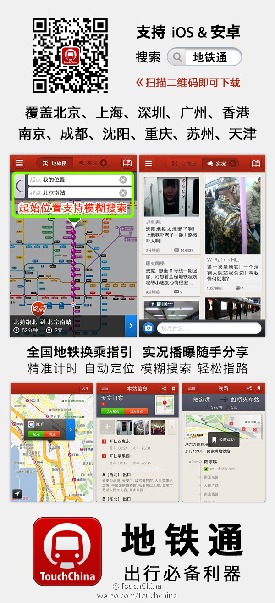

装上看看。//@沈卓立TouchChina:应用户强烈要求，我们加班加点，终于完成了年前发布杭州的承诺，自己赞一个！//@Byford张碧仿: 杭州地铁数据新上线，业界良心啊！//@TouchChina: 【地铁通】今日新增杭州地铁线路数据，还希望地铁通提供哪些城市的地铁数据，留下评论@多趣旅行:开车累，坐车苦，八方都市大拥堵；骑车吸，走路呼，四面PM2.5~【地铁通】一路出行真轻松！地铁搭乘神器，全新登场：【自动定位】一键查询地铁换乘方案，【模糊搜索】轻松获取最近地铁站点，【丰富信息】提供起点和终点到地铁站点的交通建议，【实况广场】随拍随写随手分享吐槽。网页链接 
 //@沈卓立TouchChina:应用户强烈要求，我们加班加点，终于完成了年前发布杭州的承诺，自己赞一个！//@Byford张碧仿: 杭州地铁数据新上线，业界良心啊！//@TouchChina: 【地铁通】今日新增杭州地铁线路数据，还希望地铁通提供哪些城市的地铁数据，留下评论
//@沈卓立TouchChina:应用户强烈要求，我们加班加点，终于完成了年前发布杭州的承诺，自己赞一个！//@Byford张碧仿: 杭州地铁数据新上线，业界良心啊！//@TouchChina: 【地铁通】今日新增杭州地铁线路数据，还希望地铁通提供哪些城市的地铁数据，留下评论